# For data manipulation and tidying
library(dplyr)
library(lubridate)
library(tidyr)
# For mapping
library(ggmap)
library(mapproj)
# For data visualizations
library(ggplot2)
library("RColorBrewer")
library("viridis")
# For modeling and machine learning
library(caret)Analyzing Data from the 2022 Music & Mental Health Survey
Abstract
This is a project aiming to analyze parts of the “Music & Mental Health Survey Results” dataset by Catherine Rasgaitis from 2022.
Intro
This project will look at the data provided on the results of the Music & Mental Health Survey from 2022. The Google form asked people to answer several questions about their (self-reported) listening habits, music genres, and mental health.
Let’s start!
Loading the Packages We’ll Need
Now To Import the Data
The data was downloaded from Kaggle. The dataset contains one dataset.
results <- read.csv(file = "mxmh_survey_results.csv")And Time to Look Through It
I’ll start by just getting a general look at the data file.
Rows: 736
Columns: 33
$ Timestamp <chr> "8/27/2022 19:29:02", "8/27/2022 19:57:31…
$ Age <int> 18, 63, 18, 61, 18, 18, 18, 21, 19, 18, 1…
$ Primary.streaming.service <chr> "Spotify", "Pandora", "Spotify", "YouTube…
$ Hours.per.day <dbl> 3.0, 1.5, 4.0, 2.5, 4.0, 5.0, 3.0, 1.0, 6…
$ While.working <chr> "Yes", "Yes", "No", "Yes", "Yes", "Yes", …
$ Instrumentalist <chr> "Yes", "No", "No", "No", "No", "Yes", "Ye…
$ Composer <chr> "Yes", "No", "No", "Yes", "No", "Yes", "N…
$ Fav.genre <chr> "Latin", "Rock", "Video game music", "Jaz…
$ Exploratory <chr> "Yes", "Yes", "No", "Yes", "Yes", "Yes", …
$ Foreign.languages <chr> "Yes", "No", "Yes", "Yes", "No", "Yes", "…
$ BPM <int> 156, 119, 132, 84, 107, 86, 66, 95, 94, 1…
$ Frequency..Classical. <chr> "Rarely", "Sometimes", "Never", "Sometime…
$ Frequency..Country. <chr> "Never", "Never", "Never", "Never", "Neve…
$ Frequency..EDM. <chr> "Rarely", "Never", "Very frequently", "Ne…
$ Frequency..Folk. <chr> "Never", "Rarely", "Never", "Rarely", "Ne…
$ Frequency..Gospel. <chr> "Never", "Sometimes", "Never", "Sometimes…
$ Frequency..Hip.hop. <chr> "Sometimes", "Rarely", "Rarely", "Never",…
$ Frequency..Jazz. <chr> "Never", "Very frequently", "Rarely", "Ve…
$ Frequency..K.pop. <chr> "Very frequently", "Rarely", "Very freque…
$ Frequency..Latin. <chr> "Very frequently", "Sometimes", "Never", …
$ Frequency..Lofi. <chr> "Rarely", "Rarely", "Sometimes", "Sometim…
$ Frequency..Metal. <chr> "Never", "Never", "Sometimes", "Never", "…
$ Frequency..Pop. <chr> "Very frequently", "Sometimes", "Rarely",…
$ Frequency..R.B. <chr> "Sometimes", "Sometimes", "Never", "Somet…
$ Frequency..Rap. <chr> "Very frequently", "Rarely", "Rarely", "N…
$ Frequency..Rock. <chr> "Never", "Very frequently", "Rarely", "Ne…
$ Frequency..Video.game.music. <chr> "Sometimes", "Rarely", "Very frequently",…
$ Anxiety <dbl> 3, 7, 7, 9, 7, 8, 4, 5, 2, 2, 7, 1, 9, 2,…
$ Depression <dbl> 0, 2, 7, 7, 2, 8, 8, 3, 0, 2, 7, 0, 3, 1,…
$ Insomnia <dbl> 1, 2, 10, 3, 5, 7, 6, 5, 0, 5, 4, 0, 2, 2…
$ OCD <dbl> 0, 1, 2, 3, 9, 7, 0, 3, 0, 1, 7, 1, 7, 0,…
$ Music.effects <chr> "", "", "No effect", "Improve", "Improve"…
$ Permissions <chr> "I understand.", "I understand.", "I unde…Wow, that’s kind of a lot!
I wonder how many variables that actually is, let me see with ncol. It looks like there are 33 variables.
In order for me to better understand what I’m looking at, I’m going to give a description of each variable:
Timestamp: Date and time when form was submitted in MM/DD/YYYY HH:MM:SS formatAge: Respondent’s age, in yearsPrimary.streaming.service: Respondent’s primary streaming service (“Spotify”, “Pandora”, “YouTube Music”, etc.)Hours.per.day: Number of hours the respondent listens to music per day, in .5 incrementsWhile.working: If respondent listens to music while studying/working or not (“Yes”/“No”)Instrumentalist: If respondent plays an instrument regularly or not (“Yes”/“No”)Composer: If respondent regularly composes music or not (“Yes”/“No”)Fav.genre: Respondent’s favorite or top genre (“Pop”, “Video Game Music”, “Rap”, etc.)Exploratory: If respondent actively explores new artists/genres (“Yes”/“No”)Foreign.languages: If respondent regularly listens to music with lyrics in a language they are not fluent in (“Yes”/“No”)BPM: beats per minute of favorite genreFrequency..Classical.: How frequently respondent listens to classical music (“Rarely”, “Sometimes”, “Never”, “Very Frequently”)Frequency..Country.: How frequently respondent listens to country music (“Rarely”, “Sometimes”, “Never”, “Very Frequently”)Frequency..EDM.: How frequently respondent listens to EDM music (“Rarely”, “Sometimes”, “Never”, “Very Frequently”)Frequency..Folk.: How frequently respondent listens to Folk music (“Rarely”, “Sometimes”, “Never”, “Very Frequently”)Frequency..Gospel.: How frequently respondent listens to Gospel music (“Rarely”, “Sometimes”, “Never”, “Very Frequently”)Frequency..Hip.hop.: How frequently respondent listens to Hip Hop music (“Rarely”, “Sometimes”, “Never”, “Very Frequently”)Frequency..Jazz.: How frequently respondent listens to Jazz music (“Rarely”, “Sometimes”, “Never”, “Very Frequently”)Frequency..K.pop.: How frequently respondent listens to K-Pop music (“Rarely”, “Sometimes”, “Never”, “Very Frequently”)Frequency..Latin.: How frequently respondent listens to Latin music (“Rarely”, “Sometimes”, “Never”, “Very Frequently”)Frequency..Lofi.: How frequently respondent listens to Lofi music (“Rarely”, “Sometimes”, “Never”, “Very Frequently”)Frequency..Metal.: How frequently respondent listens to Metal music (“Rarely”, “Sometimes”, “Never”, “Very Frequently”)Frequency..Pop.: How frequently respondent listens to Pop music (“Rarely”, “Sometimes”, “Never”, “Very Frequently”)Frequency..R.B.: How frequently respondent listens to R&B music (“Rarely”, “Sometimes”, “Never”, “Very Frequently”)Frequency..Rap.: How frequently respondent listens to Rap music (“Rarely”, “Sometimes”, “Never”, “Very Frequently”)Frequency..Rock.: How frequently respondent listens to Rock music (“Rarely”, “Sometimes”, “Never”, “Very Frequently”)Frequency..Video.game.music.: How frequently respondent listens to Video Game music (“Rarely”, “Sometimes”, “Never”, “Very Frequently”)Anxiety: Self-reported anxiety, on a scale of 0-10Depression: Self-reported depression, on a scale of 0-10Insomnia: Self-reported insomnia, on a scale of 0-10OCD: Self-reported OCD, on a scale of 0-10Music.effects: If music improves, worsens, or has no effect on respondent’s mental health conditions (“Worsen”, “No Effect”, “Improve”)Permissions: Permissions to publicize data (“I understand”)
Ok cool. I have a better sense of what I’m working with now.
For the questions I’m looking to ask, I don’t think I need to keep the Timestamp or Permissions variables. So let’s get them out of my dataset.
mxmh <- results[,c(-1, -33)]
names(mxmh) [1] "Age" "Primary.streaming.service"
[3] "Hours.per.day" "While.working"
[5] "Instrumentalist" "Composer"
[7] "Fav.genre" "Exploratory"
[9] "Foreign.languages" "BPM"
[11] "Frequency..Classical." "Frequency..Country."
[13] "Frequency..EDM." "Frequency..Folk."
[15] "Frequency..Gospel." "Frequency..Hip.hop."
[17] "Frequency..Jazz." "Frequency..K.pop."
[19] "Frequency..Latin." "Frequency..Lofi."
[21] "Frequency..Metal." "Frequency..Pop."
[23] "Frequency..R.B." "Frequency..Rap."
[25] "Frequency..Rock." "Frequency..Video.game.music."
[27] "Anxiety" "Depression"
[29] "Insomnia" "OCD"
[31] "Music.effects" While I’m at it, I think there might be some NA values in here that I should try to get rid of.
summary(mxmh) Age Primary.streaming.service Hours.per.day While.working
Min. :10.00 Length:736 Min. : 0.000 Length:736
1st Qu.:18.00 Class :character 1st Qu.: 2.000 Class :character
Median :21.00 Mode :character Median : 3.000 Mode :character
Mean :25.21 Mean : 3.573
3rd Qu.:28.00 3rd Qu.: 5.000
Max. :89.00 Max. :24.000
NA's :1
Instrumentalist Composer Fav.genre Exploratory
Length:736 Length:736 Length:736 Length:736
Class :character Class :character Class :character Class :character
Mode :character Mode :character Mode :character Mode :character
Foreign.languages BPM Frequency..Classical.
Length:736 Min. :0.00e+00 Length:736
Class :character 1st Qu.:1.00e+02 Class :character
Mode :character Median :1.20e+02 Mode :character
Mean :1.59e+06
3rd Qu.:1.44e+02
Max. :1.00e+09
NA's :107
Frequency..Country. Frequency..EDM. Frequency..Folk. Frequency..Gospel.
Length:736 Length:736 Length:736 Length:736
Class :character Class :character Class :character Class :character
Mode :character Mode :character Mode :character Mode :character
Frequency..Hip.hop. Frequency..Jazz. Frequency..K.pop. Frequency..Latin.
Length:736 Length:736 Length:736 Length:736
Class :character Class :character Class :character Class :character
Mode :character Mode :character Mode :character Mode :character
Frequency..Lofi. Frequency..Metal. Frequency..Pop. Frequency..R.B.
Length:736 Length:736 Length:736 Length:736
Class :character Class :character Class :character Class :character
Mode :character Mode :character Mode :character Mode :character
Frequency..Rap. Frequency..Rock. Frequency..Video.game.music.
Length:736 Length:736 Length:736
Class :character Class :character Class :character
Mode :character Mode :character Mode :character
Anxiety Depression Insomnia OCD
Min. : 0.000 Min. : 0.000 Min. : 0.000 Min. : 0.000
1st Qu.: 4.000 1st Qu.: 2.000 1st Qu.: 1.000 1st Qu.: 0.000
Median : 6.000 Median : 5.000 Median : 3.000 Median : 2.000
Mean : 5.838 Mean : 4.796 Mean : 3.738 Mean : 2.637
3rd Qu.: 8.000 3rd Qu.: 7.000 3rd Qu.: 6.000 3rd Qu.: 5.000
Max. :10.000 Max. :10.000 Max. :10.000 Max. :10.000
Music.effects
Length:736
Class :character
Mode :character
nrow(mxmh)[1] 736mxmh_no_NA <- na.omit(mxmh)
summary(mxmh_no_NA) Age Primary.streaming.service Hours.per.day While.working
Min. :10.00 Length:629 Min. : 0.000 Length:629
1st Qu.:18.00 Class :character 1st Qu.: 2.000 Class :character
Median :21.00 Mode :character Median : 3.000 Mode :character
Mean :24.76 Mean : 3.711
3rd Qu.:27.00 3rd Qu.: 5.000
Max. :89.00 Max. :24.000
Instrumentalist Composer Fav.genre Exploratory
Length:629 Length:629 Length:629 Length:629
Class :character Class :character Class :character Class :character
Mode :character Mode :character Mode :character Mode :character
Foreign.languages BPM Frequency..Classical.
Length:629 Min. :0.00e+00 Length:629
Class :character 1st Qu.:1.00e+02 Class :character
Mode :character Median :1.20e+02 Mode :character
Mean :1.59e+06
3rd Qu.:1.44e+02
Max. :1.00e+09
Frequency..Country. Frequency..EDM. Frequency..Folk. Frequency..Gospel.
Length:629 Length:629 Length:629 Length:629
Class :character Class :character Class :character Class :character
Mode :character Mode :character Mode :character Mode :character
Frequency..Hip.hop. Frequency..Jazz. Frequency..K.pop. Frequency..Latin.
Length:629 Length:629 Length:629 Length:629
Class :character Class :character Class :character Class :character
Mode :character Mode :character Mode :character Mode :character
Frequency..Lofi. Frequency..Metal. Frequency..Pop. Frequency..R.B.
Length:629 Length:629 Length:629 Length:629
Class :character Class :character Class :character Class :character
Mode :character Mode :character Mode :character Mode :character
Frequency..Rap. Frequency..Rock. Frequency..Video.game.music.
Length:629 Length:629 Length:629
Class :character Class :character Class :character
Mode :character Mode :character Mode :character
Anxiety Depression Insomnia OCD
Min. : 0.000 Min. : 0.000 Min. : 0.00 Min. : 0.000
1st Qu.: 4.000 1st Qu.: 2.000 1st Qu.: 1.00 1st Qu.: 0.000
Median : 6.000 Median : 5.000 Median : 3.00 Median : 2.000
Mean : 5.874 Mean : 4.887 Mean : 3.82 Mean : 2.649
3rd Qu.: 8.000 3rd Qu.: 7.000 3rd Qu.: 6.00 3rd Qu.: 5.000
Max. :10.000 Max. :10.000 Max. :10.00 Max. :10.000
Music.effects
Length:629
Class :character
Mode :character
That should do it, time to start looking through the data and creating visualizations.
[1] "" "Apple Music"
[3] "I do not use a streaming service." "Other streaming service"
[5] "Pandora" "Spotify"
[7] "YouTube Music" NULLData Visualization
I have a few areas within the dataset that I’d like to explore, so let’s start with age.
Age
First, I want to make a general breakdown of the ages of our respondents.
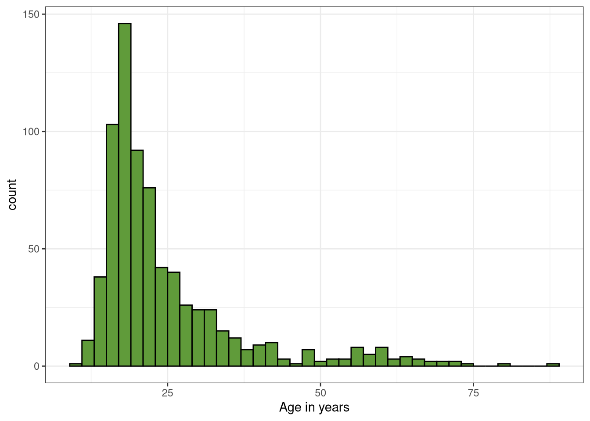
Wow, that seems really skewed towards the younger end of our data set, I want to look into that a little more.
mxmh_updatedages <- mxmh %>%
filter(Age > 13, Age <= 32) %>%
count(Age)
mxmh_updatedages Age n
1 14 17
2 15 21
3 16 44
4 17 59
5 18 85
6 19 61
7 20 40
8 21 52
9 22 39
10 23 37
11 24 20
12 25 22
13 26 22
14 27 18
15 28 13
16 29 13
17 30 11
18 31 13
19 32 16Since our data is so skewed towards younger respondents, I’m going to limit our respondents to those between the ages of 14 and 32.
mxmh_cut <- subset(mxmh, Age >= 14 & Age <= 32,
select=Age:Music.effects)Now, I want to see if age can lead to significant differences in respondents’ answers to a couple of questions.
The first thing I want to look at is if the primary streaming service of a participant has anything to do with their age. Do younger people listen on “Spotify”? Do older respondents listen on “Youtube” or “Apple Music”?
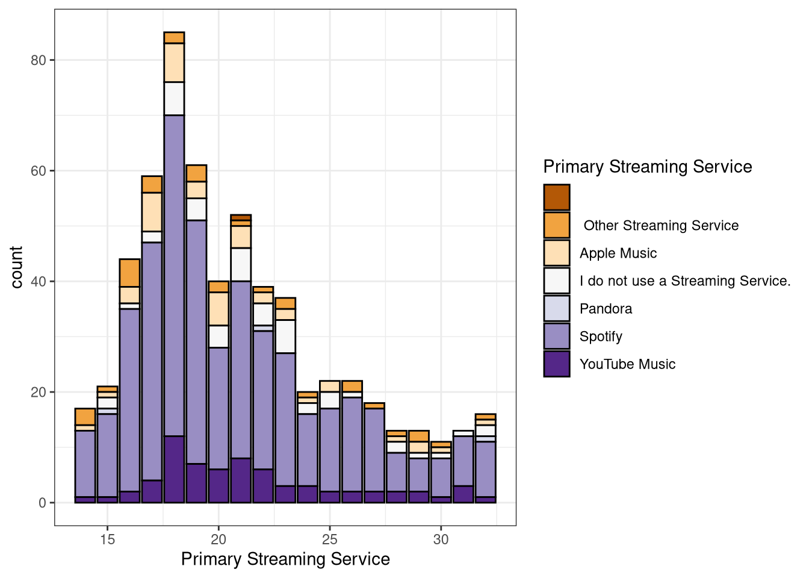
It looks like Spotify is the most common streaming service across most ages. Apple Music and Youtube Music seem to follow after that.
The next thing for age I want to look at is how age and mental health is correlated. Are younger people struggling more than old people?
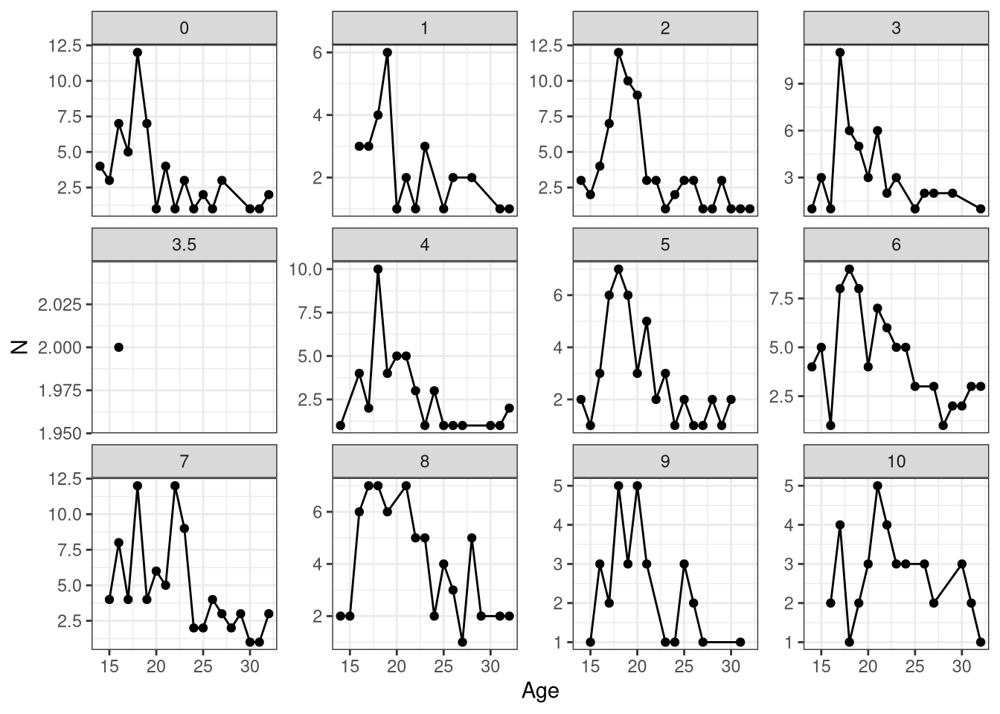
According to this, there are a lot of roughly 18-20 year olds with higher self-reports of depression. This could be because that age range has more depression, or due to the fact that we just have a lot of respondents that age.
Now that we know what ages we have, what streaming services they use, and how theirmental health is, I want to look at how many hours per day respondents listen to music based on their age.
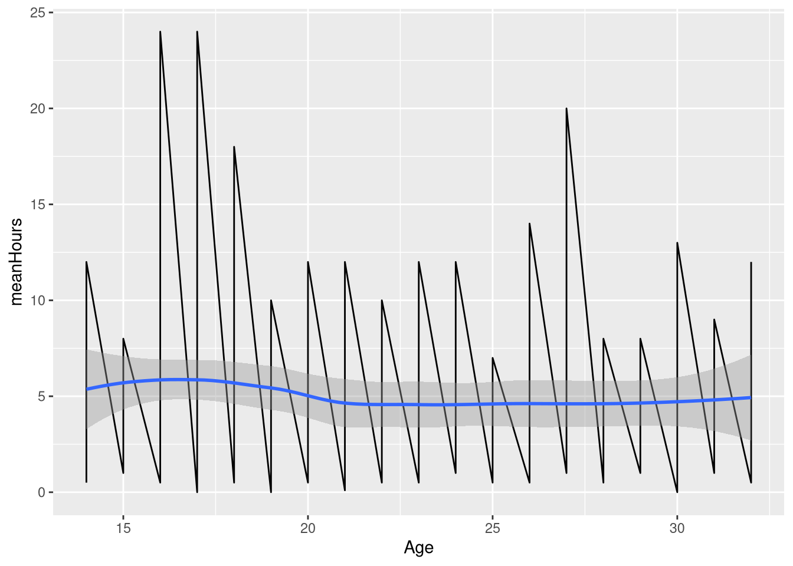
So, it looks like there’s some variability among how much music respondent’s listen to, but let’s move on to something else.
Mental Health
Now that we’ve explored how age affects some of the results of the survey, let’s look at various aspects of the mental health part of this survey. I’m counting this as the self-report scores from the Anxiety, Depression, Insomnia, and OCD variables, and the Music.effects variable.
First, I want to see if there are any mental health conditions that are more commonly self-reported by respondents.
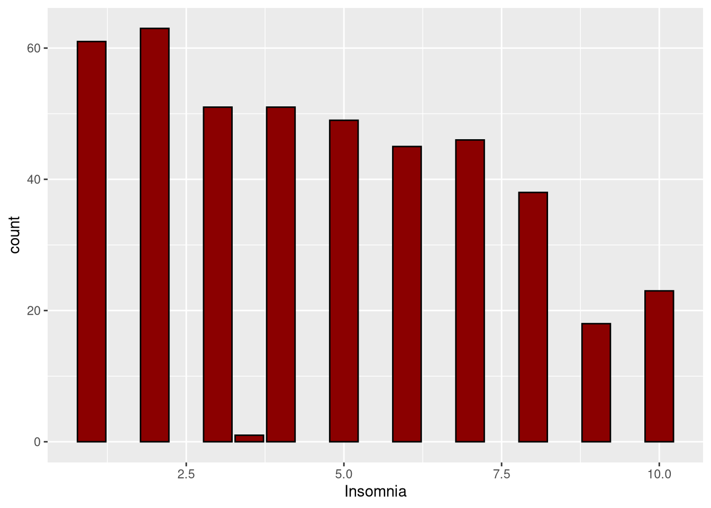
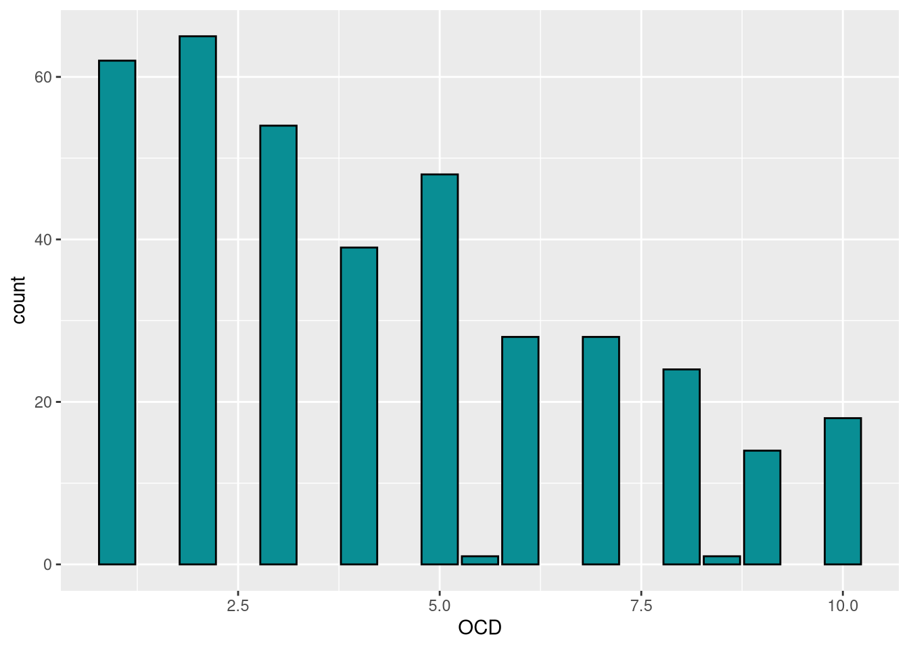
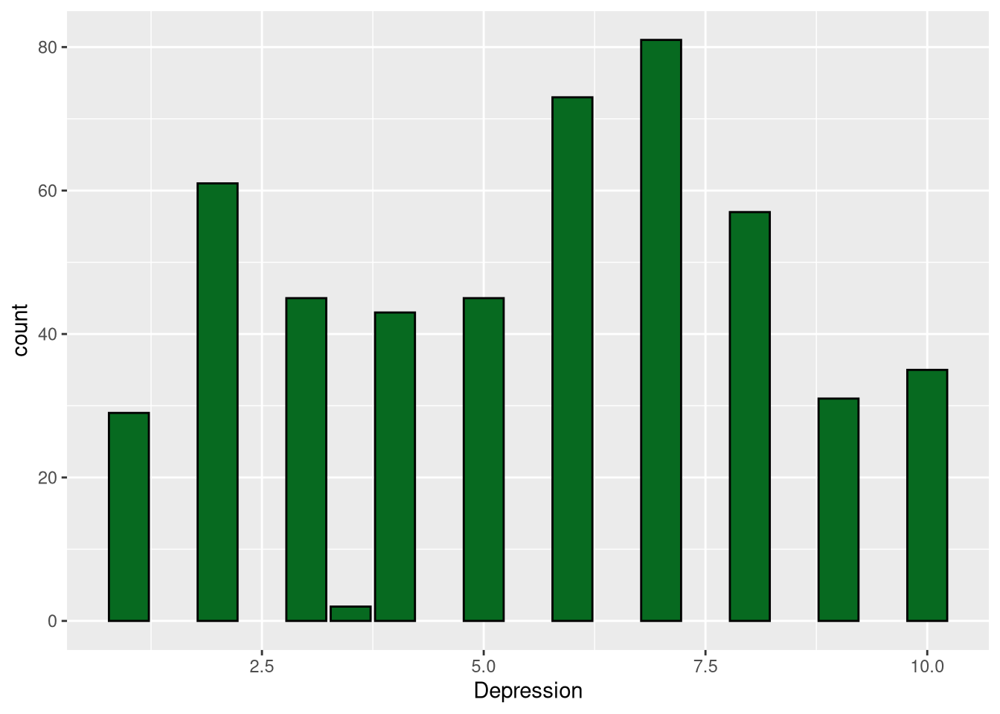
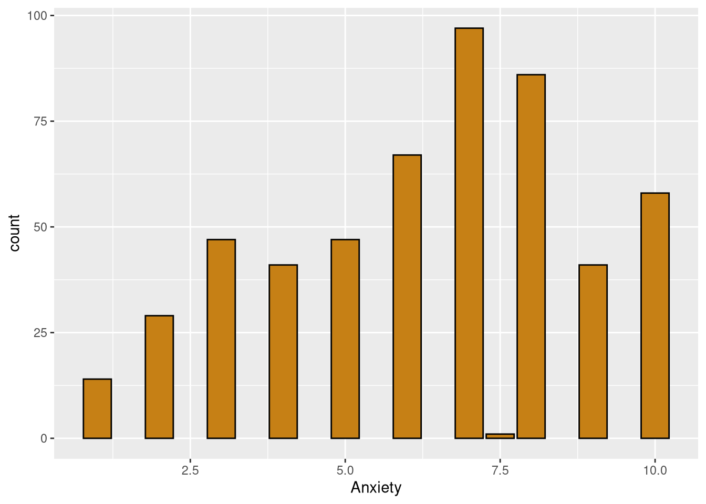
It looks like Depression and Anxiety have the most self-reports, especially with higher scores, while OCD and Insomnia have higher amounts of self-reports at lower scores, generally.
I have a few more questions related to some of these mental health conditions in specific. To start with, I’m curious if respondents with higher self-reported Insomnia listen to more music in a day than those who don’t.
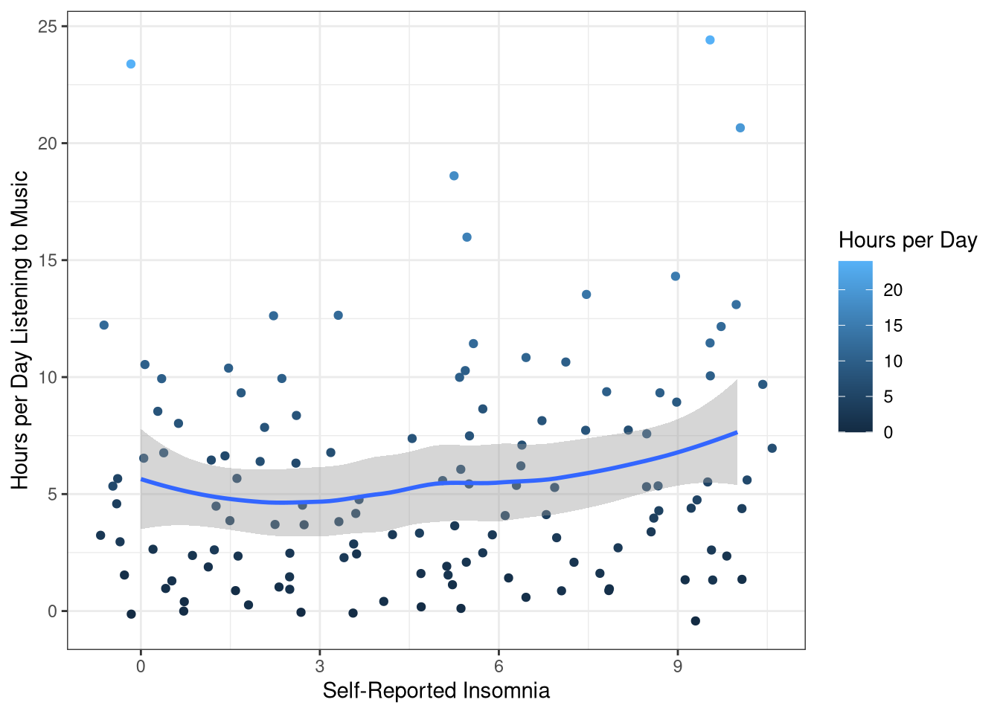
Overall, not really. It increases slightly as the insomnia scores do and there’s several outliers, but nothing really significant.
I want to see if there’s any correlation between different genres and the self-reported Depression scores.
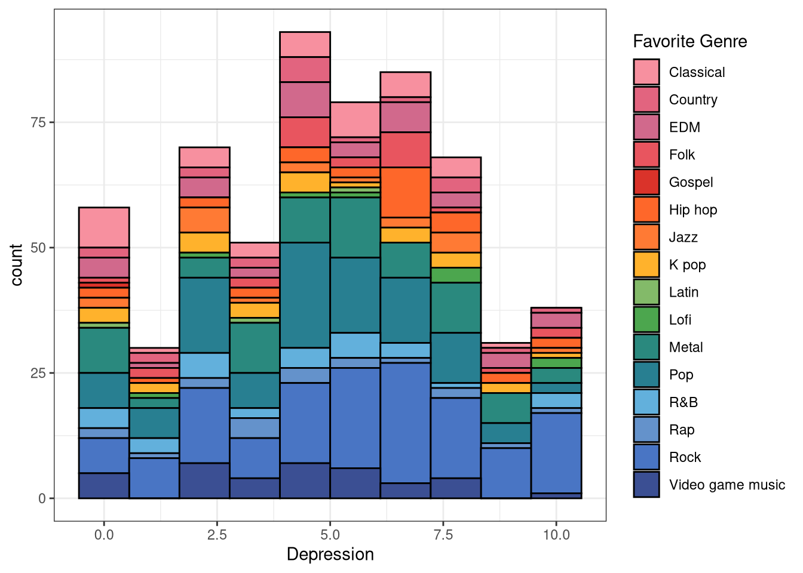
Fav.genre.Interesting, it seems to be evenly distributed among most genres, except for rock and metal music being more prominent. I wonder if I had gender data from my respondents if there would have been any more effects there.
One of the last questions about Mental Health I have is if there is a correlation between Anxiety and listening to new music while working. I know music can be very grounding, so I wonder if someone who has a high rating of anxiety would listen to it more while working.
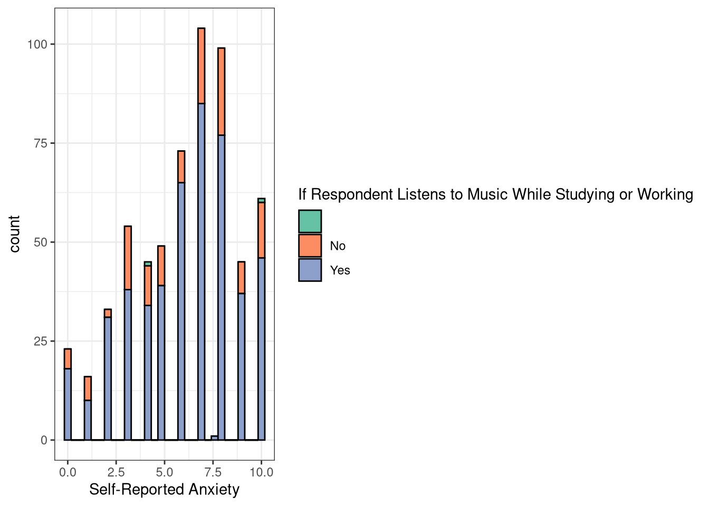
Anxiety, colored by if the respondent listened to music while studying or working.”So, it does seem that the more people self-report anxiety, the more they listen to music while they work. However, it looks like this result might be because more people rated themselves higher in anxiety in general.
Genres
Almost there! I had one last question about the data I had. I want to see if different streaming services and different favorite genres overlap. Do the metalheads really love Pandora? Do the rap listeners stay away from Spotify?
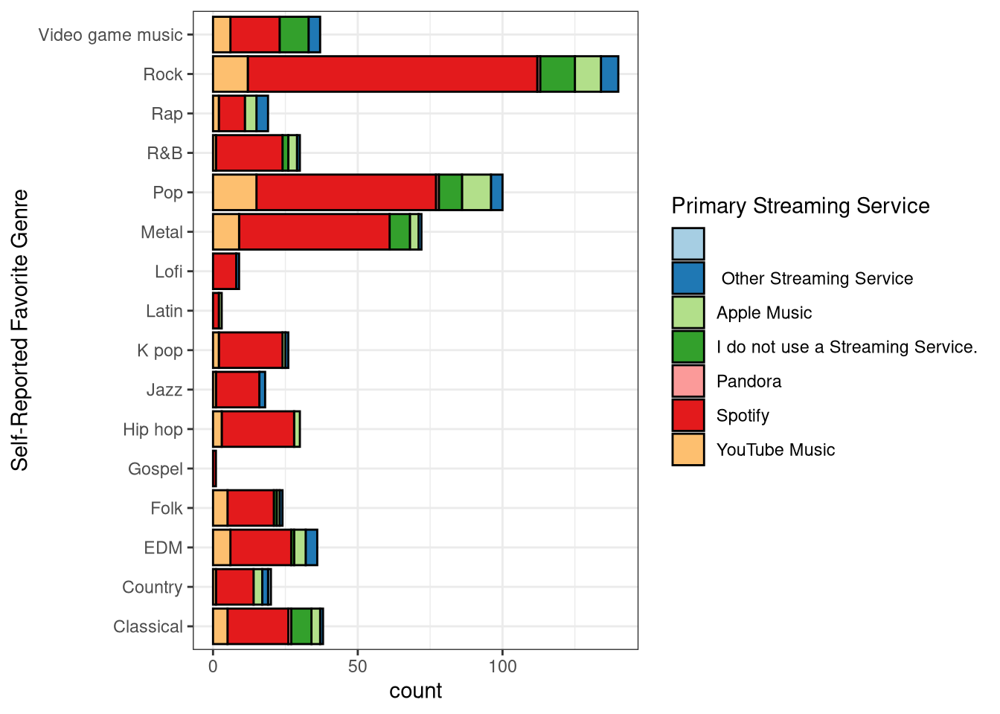
Ok, cool! It looks like Spotify is overall the most popular, and a significant amount listen to pop music on Youtube music and listen to rock music not on a streaming service at all (maybe CDs?)
I think that’s enough exploring this dataset for now. Overall, there were a lot of young people and a lot of people who listen on Spotify. The data set also saw a significant amount of people with high self-report scores of depression and anxiety. And a lot of people who listen to Rock music as well.